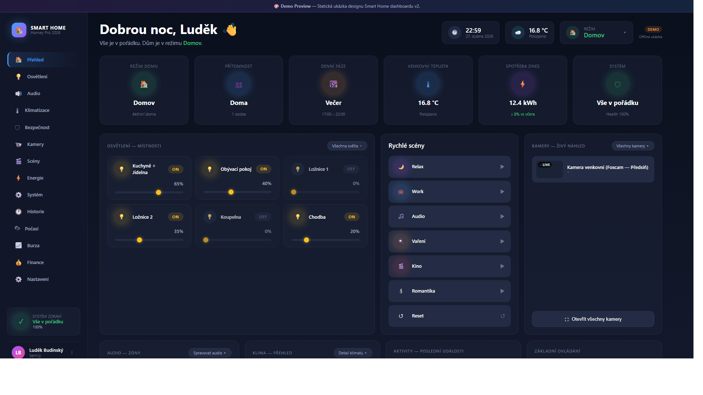

Live · Homey Pro 2026 · Semily
Smart home jako
živý organismus
Domácnost řízená script-first architekturou nad Homey Pro 2026. Garsonka v přízemí, 79 zařízení v 11 funkčních zónách (Jídelna, Kitchen, Koupelna, Ložnice, Pracovna, Prádelna, Předsíň, Spolecne, Toaleta, Pc Setup + sklad), 100+ HomeyScriptů, 200+ flow automatizací, 500+ stavových proměnných, vlastní AI Brain Guardian a multi-resolution dashboardy. Vše vyvíjené v jednom bytě v Semilech jako roky tichého refaktoringu od první žárovky k samodiagnostickému systému.
Live system · Dashboard V7
Co dům reálně dělá



Live snapshot
System health · current export
Read-only tabule co dům právě má. Hodnoty z posledního exportu Homey API + Brain Guardian validátoru.
System Health Score
92/100
Active Flows
203
HomeyScripts
116
Devices Online
74/74
Variables (sh_*)
507
Last anomaly
Bug E ghost
Current snapshot as of latest system export · 2026-04-29